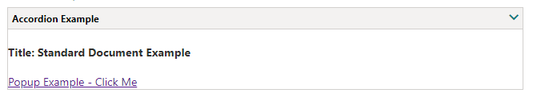
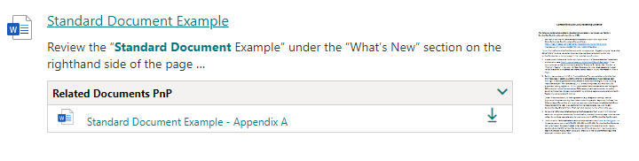

Templating - v3¶
Available layouts¶
By default, the search results Web Part comes with multiples layouts. All layouts rely on Handlebars templates.

The templating feature comes directly from the original react-content-query-webpart so thanks to @spplante!
Some provided templates embed web components (via custom HTML elements) wrapping Office UI Fabric React controls (ex: DetailsList, DocumentCard). For those, you can only customize them using the provided template options and placeholders and it means you don't have access to their underlying HTML markup.
Simple List¶
Displays the search results as a simple list with previews:

Details List¶
Displays the search results inside a tabular view using the associated Office UI Fabric DetailsList control:

Template options¶
| Option | Description |
|---|---|
| Manage columns | Allows you to build you own table view by adding or removing columns dynamically. For each column, you get the following options:
|
| Show file icon | Hide or display the file icon in the first column. |
| Compact mode | Display the details list in compact mode. |


Document Card¶
Displays search results as cards view using the associated Office UI Fabric DocumentCard control:

Note: you can still manage the number of cards displayed by row by changing the grid CSS classes directly in the template:
{{#each items as |item|}}
<div class="ms-Grid-col ms-sm12 ms-md6 ms-lg4"> <!-- 3 cards by row here for large screen resolution -->
...
</div>
{{/each}}
Template options¶
| Option | Description |
|---|---|
| Manage card fields | Allows you to define you own values for card placeholder fields. By default, the document card fields come with predefined mappings but you can set your own. As a field value, you can choose either a managed property value (from the list or as free text) and without any transformation or use an Handlebars expression by clicking on the checkbox next to it. In this case, all helpers from the main template are available. Also, if the field doesn't have the 'Allow HTML' indication flag enabled, it means the value will be always interpreted as text, whatever if you set an HTML value. Otherwise, your value will be interpreted as HTML for those fields (ex: 'Location' and 'Tags' placeholder fields). As a field value, you can choose either a managed property value (from the list or as free text) and without any transformation or use an Handlebars expression by clicking on the checkbox next to it. In this case, all helpers from the main template are available. Also, if the field doesn't have the 'Allow HTML' indication flag enabled, it means the value will be always interpreted as text, whatever if you set an HTML value. Otherwise, your value will be interpreted as HTML for those fields (ex: 'Location' and 'Tags' placeholder fields). |
In order to use the property IconSrc, ensure you do not specify a property for File Extension to not override the custom IconSrc. A custom icon should be a 16x16 pixel image.
For HTML fields you can use the special variable @themeVariant to use theme colors (ex: @themeVariant.palette.themePrimary). If you don't set a value for those fields (i.e an empty value), they won't appear in the UI:
Carousel/Slider¶
Displays search results as a carousel using the Flickity library (the same used in the PnP Starter Intranet solution).

Customize slide content¶
By default, documents card are displayed in the slider but you can add your own HTML markup for each slide inside the {{#>slider}} Handlebars partial:
{{#>slider items=(JSONstringify @root.items 2) options=(JSONstringify @root.sliderOptions)}}
<!-- Slide content goes here -->
<div class="slide">
<!-- Your HTML markup -->
</div>
{{/slider}}
{{Title}}). However, to use them you must escape every Handlebars expression with the '\' character (ex: {{Title}} becomes \{{Title}}).
This is because we don't want these expressions to be interpreted by the global Handlebars context. Actually, we use an internal compilation process with the item context so we need the raw expression to output the item properties and helpers correctly. For instance if you want an image carousel only, your HTML markup would be:
{{#>slider items=(JSONstringify @root.items 2) options=(JSONstringify @root.sliderOptions)}}
<img src="\{{getPreviewSrc item}}"/>
{{/slider}}
Or only person cards:
{{#>slider items=(JSONstringify @root.items 2) options=(JSONstringify @root.sliderOptions)}}
<div class="slide">
\{{#with (split AccountName '|')}}
<pnp-persona-card
data-image-url="/_layouts/15/userphoto.aspx?size=L&username=\{{[2]}}"
data-text="\{{../FirstName}} \{{../LastName}}"
data-secondary-text="\{{../JobTitle}}"
data-tertiary-text="\{{[2]}}"
data-optional-text="\{{../WorkPhone}}"
data-persona-size="14"
>
</pnp-persona-card>
\{{/with}}
</div>
{{/slider}}
In the case of images, the slider is smart enough to adjsut the height automatically so you don't need to specify explicit values. However, you can set an arbitrary size for the slides updating the CSS slide class.
Template options¶
| Option | Description |
|---|---|
| Auto play | If enabled, slides move automatically every X seconds. |
| Auto play duration | Move elements every X seconds. |
| Pause on hover | If enabled, pause the slider on mouse hover. |
| Number of elements to group together in slides | Groups cells together in slides. |
| Show page dots | Enable or disable slider navigation. You can adjust the dots position by updating the .flickity-page-dots CSS class. |
| Infinite scrolling | Enable or disable infinite scrolling on the carousel. |
Debug View¶
Displays search result items and global Handlebars context in a debug view (read only):

People View¶
Displays people:

Template options¶
| Option | Description |
|---|---|
| Manage persona fields | Allows you to define you own values for card placeholder fields. Like the document card, by default, the persona card fields come with predefined mappings but you can set your own. |
| Picture size | The size of the person picture to isplay. The more the size is and the more information will be displayed for each item and vice versa. |
| Disable info on hover | Disable the hover behavior for people info panel. (for future use) |
Customize templates with Handlebars¶
If provided layouts don't meet your requirements, you can modifiy them or start from scratch using Handlebars and the following helpers/features:

Accessing items¶
To iterate the regular result set use:
To iterate promoted results use:
To iterate result block results use:
Styling¶
You can write your own CSS styles inside templates. However, all CSS rules (including @media rules) will be prefixed automatically by an unique ID according to the follwoing pattern (pnp-modern-search-template_\<Web Part instance ID>) to make sure styles are isolated from other Web Parts on the page.
Sanitized HTML¶
The HTML is sanitized automatically preventing XSS attacks using DOMPurify. It means for instance, you cannot add your own <script> tags or inline JavaScript.
Handlebars helpers¶
The following custom helpers are available in addition to the handlebars-helpers:
| Setting | Description |
|---|---|
{{showResultsCount}} |
Boolean flag corresponding to the associated in the property pane. |
{{totalRows}} |
The result count. |
{{maxResultsCount}} |
The number of results configured to retrieve in the web part. |
{{actualResultsCount}} |
The actual number of results retrived. |
{{keywords}} |
The search query. |
{{getSummary HitHighlightedSummary}} |
Format the HitHighlightedSummary property with recognized words in bold. |
{{getDate <date_managed_property> "<format>" <time handling> <isZ>}} |
Format the date with Moment.js according to the current language. Date in the managed property should be on the form 2018-09-10T06:29:25.0000000Z for the function to work.<time handling> is optional and takes
<isZ> ( |
{{getPreviewSrc item}} |
Determine the image thumbnail URL if applicable. Include NormSiteID, NormListID and NormUniqueID as managed properties to ensure previews for Pages and Files. |
{{getUrl item <forceDirectLink>}} |
Get the item URL. For a document, it means the URL to the Office Online instance or the direct URL (to download it). <forceDirectLink> ( |
{{getUrlField managed_propertyOWSURLH "URL/Title"}} |
Return the URL or Title part of a URL field managed property. |
{{getCountMessage totalRows <?keywords>}} |
Display a friendly message displaying the result and the entered keywords. |
{{<search_managed_property_name>}} |
Any valid search managed property returned in the results set. These are typically managed properties set in the "Selected properties" setting in the property pane. You don't need to prefix them with item. if you are in the "each" loop. |
{{webUrl}} |
The current web relative url. Use {{@root/webUrl}} inside a loop. |
{{siteUrl}} |
The current site relative url. Use {{@root/siteUrl}} inside a loop. |
{{spellingSuggestion}} |
Spelling suggestions returned for the query to be used for "Did you mean" functionality. |
{{getUniqueCount items "property"}} |
Get the unique count of a property over the result set (or another array) |
{{getUniqueCount array}} |
Get the unique count of objects in an array. Example: [1,1,1,2,2,4] would return 3. |
{{getUnique items "NewsCategory"}} |
Return the unique values as a new array based on an array or property of an object in the array. |
{{regex <exp> <string> }} |
Match a regular expression against a string. |
{{#times 10}}<span>{{this}}</span>{{/times}} |
Iterate X times over a block |
{{#group items by="owstaxidmetadataalltagsinfo"}} |
Group items by a specific results property. See https://github.com/shannonmoeller/handlebars-group-by for usage. |
{{#getAttachments LinkOfficeChild}} <a href="{{url}}">{{fileName}}</href> {{/getAttachments}} |
Get Attachments is Handlebars block helper intended to be used with the context variables it provides like this (url and filename) in the example.The helper is intended to be used only with the LinkOfficeChild managed property wich is the default managed property for list attachments. |
{{getPageContext "property"}} |
Retrieve SPFx page context data to show in the template. See https://docs.microsoft.com/en-us/javascript/api/sp-page-context/pagecontext for possible values. Example {{getPageContext "user.displayName"}} {{getPageContext "cultureInfo.currentUICultureName"}}.Note: Casing matches the object model. |
{{coalesce ManagedProperty1 ManagedProperty2 "Fallback value"}} |
Returns the first non-null value from the list of values presented. An alias of the handlebars-helpers {{default}} helper. |
You can also define your own in the BaseTemplateService.ts file. See helper-moment for date samples using moment.
Web-components¶
The web part has a couple of helper web-components to ease rendering, used by the default templates. You may also use these in your custom templates. Pick one of the default templates, then click on customize to see how they are used. It's important to prefix these web-components with pnp-.
- document-card
- document-card-shimmers
- details-list
- video-card
- debug-view
- slider-component
- persona-card
- persona-card-shimmers
- fabric-icon - You only need to set one property, which are evaluated in order if multiple ones are set. The data-error-image, used to set a fallback image on error, is used only when the data-image-url fails to load, it will not load a fallback for data-icon-name usage.
<pnp-fabric-icon
data-image-url='[url to icon - pri 1]'
data-file-extension='[file extension - pri 2]'
data-icon-name='[office ui fabric icon name - pri 3]'
data-size='16 | 20 | 32 (default) | 40 | 48 | 64 | 96'
data-error-image='[url to image]'
>
</pnp-fabric-icon>
<pnp-accordion
data-accordion-header-text="Accordion Example"
data-theme="Default (default) | Neutral"
data-size="# | 12 (default)"
data-start-open="true | false (default)"
data-rounded-corners="true | false (default)">
<h4>Title: {{Title}}</h4>
</pnp-accordion>
Example:

- popup - provides the ability to popup content in a modal window within the search result
<pnp-popup>
<template id="popupclick">
<span>Popup Example - Click Me</span>
</template>
<template id="popupheader">
<span>Title: {{Title}}</span><br /><span>Header HTML here</span>
</template>
<template id="popupbody">
<span>Title: {{Title}}</span><br /><span>Body HTML here</span>
</template>
</pnp-popup>
Example:

-
lookup-list-expander - Ever needed to get additional data from a list or library in search? This provides that ability based on a lookup column of the result item.
In the example below, a related documents lookup column was added to the document library. This lookup column was a lookup back to the same document library so the admin could pick additional related documents for the documents.
Remember for the inner template to be executed inside of the component the handlebar expressions must be escaped with
'\'character (ex:{{Title}}becomes\{{Title}}).
<pnp-lookup-list-expander
data-list-url="https://<tenant>/sites/<sitename>"
data-list-id="{{ListID}}"
data-list-item-id="{{ListItemID}}"
data-column-name="RelatedDocuments"
data-lookup-list-fields="Id,Title,FileRef,FileLeafRef,DocumentType,BusinessUnit/Title">
<div>
<pnp-fabric-icon data-file-extension="\{{FileExtension}}"></pnp-fabric-icon>
<span><a href="\{{FileRef}}?web=1">\{{{Title}}}</a></span>
<span>
<a href="\{{FileRef}}">
<pnp-fabric-icon data-icon-name="Download" data-size="16"></pnp-fabric-icon>
</a>
</span>
<div>
<span>\{{{DocumentType}}}</span>
<span>\{{{BusinessUnit.Title}}}</span>
</div>
</div>
</pnp-lookup-list-expander>
The above example would display inside of the accordion like: 
Use result types¶
Use the result types features form the property pane options to split your templates according to results characteristics instead of making a huge central template with multiple conditions. They can be defined in 'inline' mode or using an external file. You can also use the sorting option to determine to order of evaluation for each condition.

The following operators are supported: - Equals - Not equals - Contains - StartsWith - Greater Or Equal - Less Or Equal - Less than - Greater than - Is not null
To use it in your main template, just follow this pattern. This block is not mandatory.
{{#> resultTypes}}
{{!-- The block below will be used as default item template if no result types matched --}}
<div class="template_result">
<!-- Your default template markup -->
</div>
{{/resultTypes}}
Handlebars partials are used behind the scenes and conditions are built dynamically using a recursive if/else structure.
Elements previews¶
Previews are available by default for the simple list layout, for Office documents and Office 365 videos (not Microsoft Stream). The embed URL is directly taken from the ServerRedirectedEmbedURL managed property retrieved from the search results.

The WebPart must have the following selected properties in the configuration to get the preview feature work (they are set by default): - ServerRedirectedPreviewURL - ServerRedirectedURL - contentclass - ServerRedirectedEmbedURL - DefaultEncodingURL
This preview is displayed as an iframe or a video tag when the user clicks on the corresponding preview image or compliant HTML elements. To enable the callout preview in your templates, your HTML elements must have the document-preview-item or video-preview-item CSS class and provide the following attributes:
data-src: the URL of the preview image.data-url: the URL of the iframe source or the video.data-fileext: the file extension for the video (for video only).
Preview on documents
Preview on videos
<img class="video-preview-item" src="{{PictureThumbnailURL}}" data-src="{{PictureThumbnailURL}}" data-url="{{DefaultEncodingURL}}" data-fileext="{{FileType}}"/>
Custom placeholders (i.e. shimmers)¶
You can define your own placeholders according your template markup. They will be loaded automatically before the results are loaded.

To do this, insert your HTML markup as follow in your template content:
<content id="placeholder">
<style>
/* Insert your CSS overrides here */
</style>
<div class="placeholder_root">
<!-- Your placeholder content -->
</div>
</content>
Notice your template content must be enclosed in a <content id="template"> tag if you define placeholders.
Work with SharePoint theme¶
A themeVariant variable is available in the root Handlebars context. It contains all current theme information that can use in your CSS classes or inline styles. Example:
To see all available values, you can inspect the themeVariant objetc using the 'Debug View' layout. Notice the values are udpated dynamically every time you udpate the theme through the UI.
Custom code renderers¶
You may also define your own renderers, which most often should be SPFx application customizers. These should use the resultservice to register themselves as renderers, and will upon registration be available as a rendering choice in the "Result Layouts" Section.
More information about custom code renderers may be found in a separate project search-custom-renderer, which showcases such a renderer.